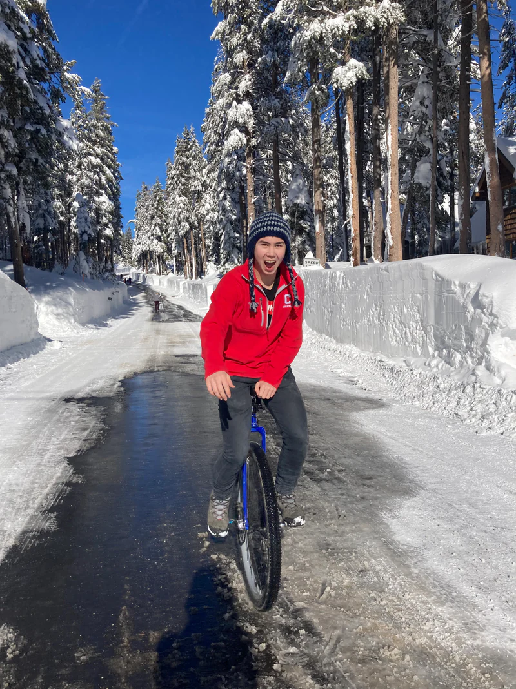

About
I work at the intersection of robotics, computer vision, and computer graphics, with a background in architecture and design.
I earned my MSc in Visual Computing and Robotics from Imperial College London, where I continue to conduct research with Rolandos Alexandros Potamias in the Embodied Dexterity Lab. My current research focuses on spatial understanding, representation, and generalization in robotic learning systems.
Previously, I earned my B.S. in Computer Science from Cornell University, with minors in Architecture and Design & Environmental Analysis. At Cornell, I worked with Donald Greenberg in the Program of Computer Graphics.
I'm broadly interested in how computational tools can bridge perception, design, and the physical world, particularly in addressing social and environmental challenges in the built environment.